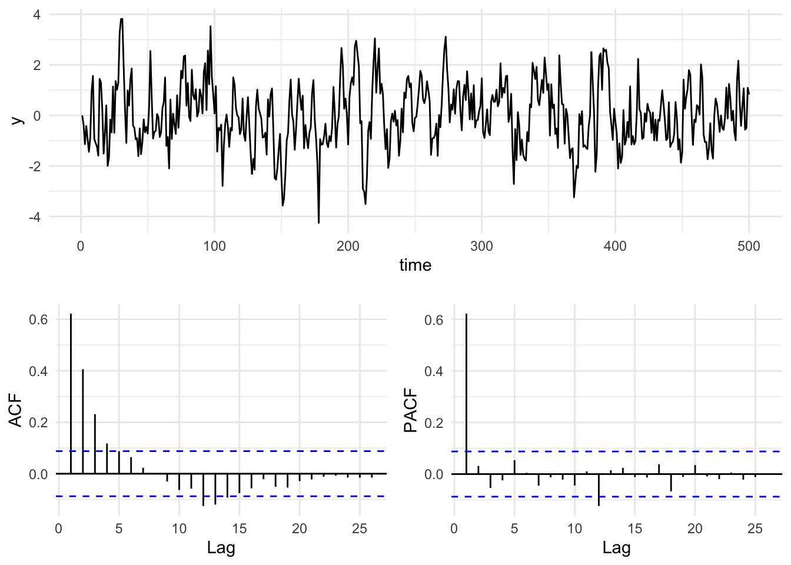

5 AR(p), ACF, PACF, etc.
5.1 Big Idea
The values in a time series are often not independent – that can be a good thing to find out – understanding what the autocorrelation is like can often tell you a lot about what the underlying processes looks like.
5.2 Reading
Have a look at Chapter two from Cowpertwait and Metcalfe (2009). It’s OK to skim the readings in this book. It’s not a great book for our purposes as many of you haven’t taken linear algebra and the book occasionally goes that way. But it’s useful to hum your way through the chapter nonetheless.
5.3 Packages
I’ll use tidyverse (Wickham 2023) some. And we will use the forecast (Hyndman et al. 2025) and gridExtra (Auguie 2017) package as well.
5.4 Correlation and Covariance
The book spends a good deal of time on how to define correlation and covariance in the context of time series analysis. Read that stuff over even though you’ve covered it all before. This is important material to be aware of for a few reasons when doing time series but the biggest is the idea of stationarity. A stationary time series is one whose statistical properties such as mean and variance are constant over time and do not follow any trends. A little more formally, that means that a stationary time series is a random process whose joint probability distribution does not change over time. We will come back to this as we get into forecasting.
5.5 Autocorrelation
Autocorrelation is a central feature of many time series. It means that values in a time series are correlated with each other as a function of time. For instance, tree-ring data are autocorrelated so that a measurement like ring width in year \(t\) is related to year in \(t-1\), \(t-2\), etc. If you think about the biology of how rings are formed you can imagine the mechanisms at play in terms of stored photosynthate, fine root generation, etc. Here is a simple way of writing a first-order autoregressive process where the prior observation influences the current observation: \[ y_t = \phi y_{t-1} + \epsilon_t\]
where \(y\) is a time series, \(t\) is a measurement in time, \(\phi\) (usually pronounced as “fie” but in Greece they’d say “fee”) is a coefficient ranging from -1 to 1, and \(\epsilon\) is some other process. The term \(\epsilon\) is typically called the error, the noise or the residuals but in time series lingo you’ll see it called the the random shock sometimes too. We call this a first-order autoregressive model and notate it as AR(1). Note that you’ll see this in some books written out slightly differently as \(y_t - \phi y_{t-1} = \epsilon_t\). I prefer thinking about it as a regression and so prefer the \(y\) term to be by itself on the left hand side of the equation.
Operationally the math works out to be easier if the series has a mean of zero. So we typically remove the mean of the data to create a mean-adjusted time series if the series has a mean not equal to zero via \(y=Y-\bar{Y}\). We’ll just stick with data that have a mean of zero for now.
For now, let’s generate an AR(1) time series by hand. Later we’ll learn a better way to do this using the arima.sim() function, but until that happy day:
n <- 500
x <- 1:n
epsilon <- rnorm(n = n,mean = 0,sd = 1) # white noise
y <- numeric(length = n)
phi <- 0.7
for(i in 2:n){
y[i] <- phi * y[i-1] + epsilon[i]
}
ggplot() + geom_line(aes(x=x,y=y)) + theme_minimal()Take a look at how we did this. We initialized with a value of zero and then started building y on the second value. We couldn’t start the loop at i=1 because we needed the prior year for an AR(1) model. Keep this in mind when you get to the section for your work below. We could have started the time series with a random number instead of a zero if we were feeling adventurous. E.g., before the loop we could have set y[1]=rnorm(1).
Run that loop above and make the plot a half dozen or so times. Get a feel for what that time series looks like. Compare it to uncorrelated times series: plot(rnorm(n),type="l").
5.6 Autocorrelation Function
5.6.1 The Very Fun Presentation
Go read Allison Horst’s on autocorrelation on the autocorrelation function (ACF). She is amazing and I read everything she does with awe.
5.7 The Boring Presentation
Fun time is over!
How strongly correlated is \(y_t\) with \(y_{t-1}\)? The answer should be \(\rho_{y_t,y_{t-1}} \approx \phi\) as above and we can calculate this via cor(y[2:n],y[1:(n-1)]) which is 0.668 for this particular random seed. The remainder (\(\epsilon\)) is white noise.
This is the standard way you are used to seeing correlation between two variables (e.g., \(x\) and \(y\)) but in this case we are looking at how \(y\) correlates with itself at different lags. Thus, more formally we can refer to autocorrelation of \(\rho\) at lag \(k\) as:
\[\rho(k) = \frac{\frac{1}{n-k}\sum_{t=k+1}^n (y_t - \bar{y})(y_{t-k} - \bar{y})}{ \sqrt{\frac{1}{n}\sum_{t=1}^n (y_t - \bar{y})}\sqrt{\frac{1}{n-k}\sum_{t=k+1}^n (y_{t-k} - \bar{y})}}\]
So how do you assess autocorrelation more generally? You calculate \(\rho\) for successive lags \(k\) and plot it. We do this with the function Acf which produces a figure called a correlogram. Note that we are using the function Acf in forecast rather than the canonical acf function in stats. There are a few differences that you can read about (?Acf) but the two functions are essentially similar.
This produces a plot of the correlation (\(r\)) at lags (\(k\)). The autocorrelation value at the first lag (\(k=1\)) is \(\phi=0.668\) which is very close to the value of \(\phi\) we set above. But also note that there is autocorrelation at higher lags (\(k=2, k=3\)) that follows a decay of \(\phi^k\) (\(\phi_2=\phi^2\), \(\phi_3=\phi^3\), etc.).
The correlogram provides a great visualization into the autocorrelation structure and can also tell us whether the correlation is significantly different from zero. The assumption is that the correlation at lag \(k\) should be zero if the series is an independent and identically distributed random variable. Specifically, the statistic \(r\) estimates the true value of the parameter \(\rho\): \(E(\rho_k)=-1/N\) and the variance is \(Var(\sigma^2_k)=1/N\). Thus, the 95% confidence limits for the statistic \(r\) in the correlogram can be added to the plot (dashed lines) as \(0 \pm 1.96 / \sqrt N\). The acf function plots the confidence intervals at a default value of 95% using the argument ci via:
## [1] 0.08765225Ok. You should be hip to the idea that by testing 25 lags like we did in the figure above means that having any one given lag \(k\) outside the 95% confidence limits is no reason to fire off a paper to Nature. I.e., you might well see a value outside the limits even if the time series is drawn from a random population. The key is interpreting the figure according to the properties of the system. A strong significant autocorrelation at lag 1 makes good sense in many biological or physical systems while an isolated barely significant value at, say, lag 18 is unlikely to be something you should get excited about. Always think in terms of mechanism – does what you see in the data make sense?
How can we can extract the actual numbers from the ACF object? Figuring out how to do so might take a little sleuthing on your part. If you look at the help page for acf you’ll see that the output produces an array called acf which contains the information on the correlations at various lags. Running str on the ACF object helps too. As always, str is your friend! Thus:
## List of 6
## $ acf : num [1:27, 1, 1] 1 0.667 0.395 0.201 0.106 ...
## $ type : chr "correlation"
## $ n.used: int 500
## $ lag : num [1:27, 1, 1] 0 1 2 3 4 5 6 7 8 9 ...
## $ series: chr "y"
## $ snames: NULL
## - attr(*, "class")= chr "acf"## [1] 1.000000000 0.667381959 0.394898921 0.201185905 0.105832323
## [6] 0.006835833 -0.031653516 -0.043152324 0.030731602 0.101805417
## [11] 0.080434533 0.006901371 -0.018551768 0.002020845 0.010443740
## [16] 0.011214921 -0.024411046 -0.032823730 -0.001342588 0.018718373
## [21] -0.005275216 -0.036887143 -0.055374925 -0.036574252 -0.004123666
## [26] -0.006268373 0.012301501Note that value of 1.0 at lag zero. Ugh. I hate that. It shows that when you correlate \(y\) to \(y\), the correlation is one. There are reasons I can explain for why that is included but it’s mostly there annoy me I think.
So, the data above follow an AR(1) model and the acf plot lets us visualize the autocorrelation structure.
5.8 Partial Autocorrelation Function
5.8.1 PACF
Let’s revisit our observation above that while \(\phi\) affects \(y_{t-1}\) we still see autocorrelation at higher lags (\(k=2, k=3\)). Why? Because if \(y_t\) and \(y_{t-1}\) are correlated, then \(y_{t-1}\) and \(y_{t-2}\) must also be correlated. Thus, \(y_{t}\) and \(y_{t-2}\) will be correlated because they are both connected to \(y_{t-1}\). What we’d like to do next is remove that decaying echo using partial regression.
The Pacf function lets us look at the partial autocorrelation which shows conditional correlation at lag \(k\) after we take into account effects of the the prior lags. Partial regression lets us measure the linear dependence of one variable after removing the effect of another variable. Thus at lag 2, the partial autocorrelation of measures the effect (linear dependence) of \(y_{t-2}\) on \(y_t\) after removing the effect of that \(y_{t-1}\) has on \(y_{t-2}\).
Our expectation for y is that after taking the AR(1) model into account the correlation at subsequent lags should fall to zero. In other words, if we have a parsimonious model for a first-order process the partial correlations should be very small. Let’s look:
Interpreting ACF plots is pretty straightforward, but what does the PACF plot mean? Well, if you have an AR(1) process the remaining autocorrelation at higher lags will be near zero in your PACF plot. That is, if the true process is AR(1), all autocorrelation is removed from the model – even the residual autocorrelation from the geometric decrease seen at higher lags in the ACF plot. Thus, if you have an AR(1) process, the ACF decays geometrically while the PACF falls to zero (zero’ish) abruptly after lag 1. If you still see a geometric progression decline in a PACF plot you might be looking at different process, like an MA(1) process. We will get there next week.
5.8.2 Underneath the Hood of PACF
How does PACF work? How does it relate to the ACF values? How you can get a feel for what PACF is all about? Good questions. So, let’s take a look under the hood of the Pacf function so to speak. The most straightforward answer involves unpacking the idea that the sample autocorrelations and the partial autocorrelations relate via the Durbin-Levinson recursion. But I’ll show an example here that gives the idea using the coefficients from a linear model.
Recall \(y\) from the last section.
Now, let’s warm up by doing the autocorrelation “by hand” using the cor function as well as the Acf function:
## [1] 0.67## [1] 0.39# Done by hand
yLag1 <- c(y[-1],NA)
yLag2 <- c(y[-c(1,2)],NA,NA)
round(cor(yLag1,y,use = "complete.obs"),2)## [1] 0.67## [1] 0.4The coefs differ a little after the third decimal point due to the way that the cor calculates the degrees of freedom vs Acf (I think). But the differences are small.
We can put this into a loop and create the ACF plot.
yACFv2 <- numeric(length = 25)
for(i in 1:25){
yLag <- y[-c(1:i)]
yClip <- y[1:length(yLag)]
yACFv2[i] <- cor(yClip, yLag)
}
par(mfcol=c(1,2))
Acf(y,ylim = c(-0.1,0.8),main="ACF done via `Acf`")
plot(1:25,yACFv2,type="h",main="ACF done by hand",ylim = c(-0.1,0.8))
abline(h=0)
cis <- qnorm((1 + 0.95)/2)/sqrt(n)
abline(h=c(-cis,cis),lty="dashed",col="blue")Now we can do the same for the partial coefficients which we get using a regression analysis through the origin.
## [1] 0.67## [1] -0.09## yLag1
## 0.67## yLag2
## -0.09We can recreate the PACF plot as well. It’s a little more involved. Walk through it and you’ll figure it out. But the key is that we have to build a matrix of lagged predictors as we increase the order.
yPACFv2 <- numeric(length = 25)
for(j in 2:25){
nCols <- j
nRows <- length(y) - j + 1
yLagMat <- matrix(0, nRows, j)
for(i in 1:nCols){
yLagMat[ ,i] <- y[i : (i + nRows - 1)]
}
lm1 <- lm(yLagMat[,1] ~ yLagMat[,-1] - 1)
yPACFv2[j] <- coef(lm1)[j - 1]
}
par(mfcol=c(1,2))
Pacf(y,ylim = c(-0.1,0.8),main="PACF done via `Pacf`")
plot(1:25,yPACFv2,type="h",main="PACF done by hand",ylim = c(-0.1,0.8))
abline(h=0)
cis <- qnorm((1 + 0.95)/2)/sqrt(n)
abline(h=c(-cis,cis),lty="dashed",col="blue")Just in case anybody really wants the details, the function pacf does this with linear algebra by solving the Toeplitz matrix. The details of this are significantly past the level of detail we typically go into:
yACFcoef <- yACF$acf[,,1]
yPACFv3 <- numeric(length = 26)
for(i in 1:26){
yPACFv3[i] <- solve(toeplitz(yACFcoef[1:i]), yACFcoef[2:(i+1)])[i]
}
yPACFv3 # PACF by hand version 3## [1] 0.667381959 -0.091055966 -0.046528939 0.025185709 -0.091022904
## [6] 0.015966667 -0.001923789 0.121385775 0.063258196 -0.089661989
## [11] -0.073835268 0.023019938 0.053175213 0.003885418 0.013368725
## [16] -0.069177973 -0.015116848 0.042310786 0.015775388 -0.020538866
## [21] -0.040782006 -0.038322575 0.023721661 0.043779099 -0.013104062
## [26] 0.045485723## [1] 0.667381959 -0.091055966 -0.046528939 0.025185709 -0.091022904
## [6] 0.015966667 -0.001923789 0.121385775 0.063258196 -0.089661989
## [11] -0.073835268 0.023019938 0.053175213 0.003885418 0.013368725
## [16] -0.069177973 -0.015116848 0.042310786 0.015775388 -0.020538866
## [21] -0.040782006 -0.038322575 0.023721661 0.043779099 -0.013104062
## [26] 0.0454857235.9 AR(1) to AR(p)
The AR(1) concept is extendable as an AR(p) model to incorporate multiple time steps as: \[ y_t = \sum\limits_{i=1}^p \phi_i y_{t-i} + \epsilon_t \]
where \(p\) denotes the order of the model. So an AR(2) model would be \(y_t = \phi_1 y_{t-1} + \phi_2 y_{t-2} + \epsilon_t\) and if \(p=3\) we’d have \(y_t = \phi_1 y_{t-1} + \phi_2 y_{t-2} + \phi_3 y_{t-3} + \epsilon_t\). We’ll do more on higher order models later including how to fit them and how to interpret them. But for now get used to the idea that higher order models have more memory.
5.10 Random walks
A random walk is a special kind of AR1 autocorrelation where the observation at \(t-1\) is the jumping off point for the observation at \(t\). That means \(\phi=1\) and the time series is not stationary. Rather, the time series “walks.” Because \(\phi=1\) we can leave it out of the equation:
\[ y_t = y_{t-1} + \epsilon_t\]
A drift term, \(\delta\), can be added so that a random walk model with drift is:
\[ y_t = \delta + y_{t-1} + \epsilon_t\]
Run this code a few times and appreciate the plots. Are these models stationary?
Here is a random walk without drift:
n <- 100
x <- 1:n
y <- numeric(length = n)
for(i in 2:n){
y[i] <- y[i-1] + rnorm(1)
}
ggplot() + geom_line(aes(x=x,y=y))And with drift:
y <- numeric(length = n)
drift <- 0.2
for(i in 2:n){
y[i] <- drift + y[i-1] + rnorm(1)
}
ggplot() + geom_line(aes(x=x,y=y))Oh, here is a question for you to answer – you should be able to spit this answer out without having to calculate anything. What would the Acf() and Pacf() plots look like for these data? How would it change if you increase \(n\)?
5.10.1 Stationarity is dead
That’s the title of a famous paper in hydrology. It’s controversial and something that has influenced a lot of discussion in the global change community. Look back up at the random walk section above. A random walk is not stationary. Use some very simple algebra (just rearrange) and show with an equation how make \(y_t = y_{t-1} + \epsilon_t\) stationary. Why is stationarity desirable?
5.11 Autocorrelation examples with real data
Let’s look a at few examples of autocorrelation with data sets that are already part of R. You’ll work with your own later.
5.11.1 Nile
First, let’s look at the Nile data which has measurements of the annual flow of the river Nile from 1871–1970. The units are in 10\(^8\) m\(^3\).
data(Nile)
broom::tidy(Nile) %>%
ggplot(mapping = aes(x=index,y=value)) +
geom_line() +
labs(x="Date",y=expression(10^8~m^3),
title="River Nile Flow") +
theme_minimal()Is this river flow record autocorrelated?
And the PACF
Looking at the plot of the original time series it does look like its possible that high flow years follow high flow years and low years follow low years (positive autocorrelation) but it’s hard to say for sure. However the ACF and PACF plots show that there is an AR(1) model at play here. Like our simulated data above the PACF shows no significant autocorrelation at a lag of two years after accounting for the lag at one year. Thus, we can probably say that this record follows a process: \(y_t = \phi_1 y_{t-1} + \epsilon_t\).
5.11.2 Air Temperature
Next, there is a data set of mean annual temperature in degrees Fahrenheit in New Haven, Connecticut, from 1912 to 1971.
data(nhtemp)
broom::tidy(nhtemp) %>%
ggplot(mapping = aes(x=index,y=value)) +
geom_line() +
labs(x="Date",y=expression(degree~F),
title="Mean Annual Temp, New Haven, Connecticut") +
theme_minimal()Is this temperature record autocorrelated?
And the PACF
Unlike what we have above, the ACF and PACF plots show that there is likely an AR(2) model at play here. Note that the PACF shows significant autocorrelation at a lag of two years even after accounting for the lag at one year. Thus, we can probably say that this temperature record follows a process: \(y_t = \phi_1 y_{t-1} + \phi_2 y_{t-2} + \epsilon_t\). See below for how we might estimate those coefficients.
5.11.3 Sunspots
That stuff above is all pretty straightforward. But what about a time series with a cyclical nature? Take a look at a data set of annual sunspot counts from 1700 to 1988. Load and plot the data.
data(sunspot.year)
broom::tidy(sunspot.year) %>%
ggplot(mapping = aes(x=index,y=value)) +
geom_line() +
labs(x="Date",y="n",
title="Annual Sunspot Count") +
theme_minimal()
This is a whole different level of autocorrelation! Note how the series goes up and then down in a cycle. This means that there will be both positive and negative autocorrelation depending on the lag.
Take some time to wrap your head around this idea. The data are positively autocorrelated for a few years, then negatively autocorrelated, and so on. It should make sense once you realize that sunspots numbers go up and down on an approximately 11-year cycle due to internal hydromagnetic processes. Figuring out what the dominant periodicities are in a time series falls under the realm of studying time series in the frequency domain. We’ll get to that later.
5.12 Choosing the Order of an AR(p) Model by AIC
Above, we used the ACF and PACF plots to get a feel for the appropriate order p for an AR(p) model. This graphical approach is important for building intuition.
However, you do not have to guess the order just by eye.
You can formally select the best model using a criterion like AIC.
Before we move on, it is important to be clear about what the ACF and an AR(p) model are actually estimating:
- The ACF shows correlations between observations at different lags. It measures how strongly \(y_t\) and \(y_{t-k}\) move together.
- An AR(p) model fits regression coefficients. It estimates how much past values predict \(y_t\), accounting for the effects of earlier lags.
Although correlation and regression are related, they are not the same: - A correlation measures association without controlling for anything else. - A regression coefficient measures the direct effect of one predictor while controlling for other predictors.
In an AR(p) model, each coefficient shows the effect of a lagged value after adjusting for the others.
In R, the ar function fits an AR model and selects the order p automatically:
- By default, it uses maximum likelihood estimation (MLE) to fit the model (get the coefficients).
- It chooses the order that minimizes the AIC.
Among other things, the ar function returns:
- The selected order.
- The estimated AR coefficients.
For example, we can fit an AR model to the nhtemp data:
##
## Call:
## ar(x = nhtemp)
##
## Coefficients:
## 1 2
## 0.2183 0.3067
##
## Order selected 2 sigma^2 estimated as 1.353In this case, ar uses AIC to select the “best” p and estimates the corresponding regression coefficients. Compare that to the ACF plot above for the nhtemp data.
Note:
The ar function will estimate the coefficients in several different ways. Typically you have learned to use OLS in regression. For reasons we don’t need to get into ar uses MLE.
MLE and OLS both estimate AR models, but they differ slightly:
- OLS fits by minimizing the sum of squared residuals.
- MLE fits by maximizing the likelihood of the observed data under the model, assuming a normal distribution. MLE is generally more efficient, especially for small samples.
I strongly recommend reading the help page for ar.
5.13 Your work
5.13.1 ACF and PACF with different values of \(\phi\).
The code below will simulate four different AR(1) time series with different values of \(\phi\). All of the time series have the exact same residuals (\(\epsilon\)). Plot each series and then plot the ACF and PACF plots for each (12 plots total). Think about your expectations for the graphs before you plot them. Interpret.
n <- 100
x <- 1:n
epsilon <- rnorm(n = n,mean = 0,sd = 1) # white noise
y1 <- numeric(length = n)
y2 <- numeric(length = n)
y3 <- numeric(length = n)
y4 <- numeric(length = n)
for(i in 2:n){
y1[i] <- 0.95 * y1[i-1] + epsilon[i]
y2[i] <- 0.75 * y2[i-1] + epsilon[i]
y3[i] <- 0.50 * y3[i-1] + epsilon[i]
y4[i] <- 0.25 * y4[i-1] + epsilon[i]
}5.13.2 Roll your own AR(2)
Use a loop and simulate your own AR(2) time series with \(\mu=0,\sigma=1\). You’ll need variables \(\phi_1\) and \(\phi_2\). Set them to \(\phi_1=0.3\) and \(\phi_2=0.5\) to start. Then play with those values. Plot the series and look at the acf and pacf. Think about your expectations for the graphs before you plot them. Interpret.
5.13.3 Sockeye
I’ve been lucky enough to get involved in a ridiculously awesome project in Alaska that looks at how returning salmon fertilize the riparian areas surrounding the stream. As part of that project, which invovled multiple decades of throwing dead salmon around, I became aware of this incredibly detailed time series of sockeye salmon escapement data at Hansen Creek. Hansen Creek is a small (about 4m wide and 10cm deep) in the Wood River system of Bristol Bay, southwestern Alaska, USA (59.317 N,-158.695 E).
These data show the total number of salmon returning to spawn in the creek from 1950 onward. The file HansenSockeye.rds is on Canvas. These data are class ts with frequency of one. You read it in with the readRDS function e.g. sock <- readRDS("data/HansenSockeye.rds").
Take a look at the time series and it’s autocorrelation patterns. As a cool hint as to what is going on, sockeye salmon spend 2-3 years in the ocean plus 1-2 years in freshwater to return as 3-5 year-olds to spawn. It’s unclear whether the choice to spend three or five years before returning to spawn is a function of ocean conditions, local population biology/behavior, or some combination, However, otoliths from the fish caresses at Hansen Creek suggest that most of the salmon that are returning four years old. What can you infer about this record in terms of the intersection between the fish ecology and the escapement time-series properties?
5.13.4 Write Up and Reflect
Pass in a R Markdown doc with your analysis. Leave all code visible, although you may quiet messages and warnings if desired. Turn in your knitted html. The last section of your document should include a reflection where you explain how it all went. What triumphs did you have? What is still confusing?
5.14 Postscript: A Helpful Plotting Chunk
Here is a simple way of making a plot of a time series and its respective ACF and PACF plots. It uses the gridExtra package to put the three plots all together. There are lots of ways of doing this. I will often use the cowplot (Wilke 2024) package and there are many other options.
n <- 500
x <- 1:n
epsilon <- rnorm(n = n,mean = 0,sd = 1) # white noise
y <- numeric(length = n)
phi <- 0.6
for(i in 2:n){
y[i] <- phi * y[i-1] + epsilon[i]
}
simpleLayoutMatrix <- matrix(c(1,1,2,3),nrow = 2,ncol = 2,byrow = TRUE)
p1 <- ggplot() + geom_line(aes(x=x,y=y)) + labs(x="time") + theme_minimal()
p2 <- ggAcf(y) + labs(title=element_blank()) + theme_minimal()
p3 <- ggPacf(y) + labs(title=element_blank()) + theme_minimal()
grid.arrange(p1,p2,p3,
layout_matrix=simpleLayoutMatrix)